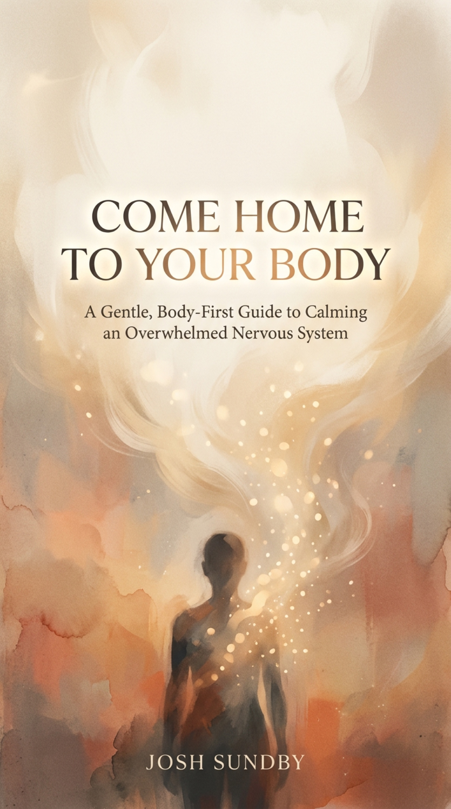

A few of the core practices from the book, free, in my voice. When reading feels like too much, close your eyes, press play, and let me lead.
Start with the long exhale. The rest are here whenever you need them.
The breath that tells your body it is safe. The one I would hand you first.
Land back inside yourself after a day spent in your head.
Settle the system after a long day, a hard moment, or any time you are wound up.
Being held instead of holding. For the tired ones.
Set the day down on the way to sleep.
More practices from the book are on the way. I am recording the rest in my voice and adding them here.
Leave your email and I will let you know when the next ones land, plus occasional quiet notes.